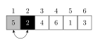
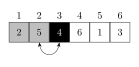
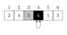
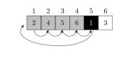
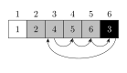

Week 1: Intro
What is an algorithm?
A (finite) sequence of instructions that transforms some (well-specified) input into (well-specified) output.
Definition from wikipedia:
In mathematics and computer science, an algorithm is an effective method expressed as a finite list of well-defined instructions for calculating a function.
Algorithm = “A tool for solving a well-defined computational problem”
Algorithm \(f:\) input \(\to\) output.
Properties?
- Run-time (time complexity)
- Space complexity (how much disk space is taken up)
- Sorting can be done in place
- Decideability
- When a computer gets to a step, it has to know what to do.
Often time and space complexity play off each other.
Rhetorical appeal: just look on Instagram — we store so much stuff. Apparently space is cheap.
1. do x
or do y
# not an algorithm1. flip coin
2. if heads -> x
tails -> y
# is an algorithmRandomness comes in different flavors:
- Quicksort is a method that always sorts, but its run-time is random.
- MCMC uses randomness in the result, because if we run it twice the results are different.
Runtime and correctness are the gold-standard in methodology development. Prove runtime, prove correctness in the p-sets.
Input: a set of numbers \(\langle a_1, a_2, ..., a_n \rangle\).
Output: Sorted sequence of input data \(\langle a_1', a_2', ..., a_n' \rangle\) with \(a_1' \leq ... \leq a_n'\).
A sorting algorithm \(f\) solves the problem defined by the input-output relationship.
There are many sorting techniques.
An iconic algorithm:
function gcd(a,b):
while a ≠ b:
if a > b:
a := a-b
else:
b := b-a
return a
gcd: 20, 15 -> 5
a = 20, b = 15
a = 5, b = 15,
a = 5, b = 1
a = 5, b = 5This algorithm is the greatest common divisor.
This is used in encryption and it is still the fastest algorithm.
From ~300 BC from Euclid of Alexandria.
Examples of algorithms:
- Sorting Algorithms
- Optimization Problems:
- Traveling salesman: chip design, airline schedule
- Mathematical problems:
- Solution of linear equations / matrix algebra
- Integration
- Statistical problems
- Optimal designs / power calculations
- Computation of distributions
- Computation of test statistics
Examples:
- Euclid GCD
- Pagerank
- Gradient descent
- Local minimum
- Bellman; Ford; shortest path and allow negative weights
- Djikstra
- Compression
- Word2Vec
- Shannon Encoding for Transmission Errors
- Tower of Hanoi
- Recursive
Georg’s hit-list:
- Euclid
- Quadratic Sieve
- Berlekamp
- Cantor-Zassehaus
Factoring numbers is super-polynomial but sub-exponential. It’s like almost exponential. This doesn’t go for factoring polynomials.
When multiplying numbers, all the terms get jumbled up whereas we know where the pieces came from in polynomials:
(123 * 827) = (1*10^2 + 2 * 10^2 + 3 * 10^0 ) * (...)
vs.
(2x + 3)(x^2 + 1)What do random numbers and compression have in common?
Properties of Algorithms
- Feasibility
- Termination
- Deterministic
- Finite
Algorithms work on dynamic sets of elements (input -> output):
- Searching, inserting and deleting elements
- Maximum, minimum element
Data structures are used for the implementation of dynamic datasets. The efficiency of a data structure can depend on the desired manipulation operation.
Examples of data structures:
- Array: access to elements based on index
- Continuous allocated memory, evenly divided
- Linked List: reference / pointer to the next element
- Stack: dynamic set of elements, last in first out
- Queue: dynamic set of elements, can only be read starting from most longest added element, first-in-first-out
- Graphs or Trees: elements have references/pointers to a variable number of other elements
Compare and contrast the array, doubly-linked list, and the heap:
The array has the property that if every element is of the same structure and takes up the same amount of memory, we can access the nth element quickly by calculating where it will be in memory and looking there. However, to update an array can be annoying because if it is growing and the neighboring memory is not free, we might have to move the whole array.
The doubly-linked list facilitates things like:
- Easy insertions or deletions anywhere
- Quickly accessing the first and last elements
- Easy storage in memory since memory doesn’t need to be in one contiguous block
But search algorithms are limited to stepping through the list until a desired element is found.
On the other hand, the heap allows for intelligent searching. Of course heaps aren’t good for everything: for example, accessing the nth element would be easier in an array than in a heap.
References:
Berlekamp’s algorithm https://en.wikipedia.org/wiki/Berlekamp%27s_algorithm
Rotating doubly-linked list: https://tex.stackexchange.com/questions/242044/add-label-to-a-rotated-doubly-linked-list
Day 2
We’ve moved classrooms to Kresge G1. On 7th of February, and 4th of March we need to be in FXB G12.
Last time we talked about algorithms like sorting, searching, talking about their time / space complexity.
Algorithms need to have finite numbers of instructions.
Deterministic means there is no randomness.
Well-definedness means that the computer knows what to do at every step.
Properties of algorithms include:
- Feasibility
- Termination
- Deterministic
- The output is well-defined for every instance
- At any time, the next step is well-defined
- Finite
- The number of steps must be finite
- At any time point, the required memory must be finite
Today let’s discuss about random numbers.
Motivation could include:
- Statistical simulation (Monte Carlo) in statistical methods research.
- The statistical theories/methods are all based on assumptions. So most theorems state assumptions…
- The theories can hardly be verified in real world data because
- the real data never satisfy the assumption; and (2) the underlying truth is unknown (gold standard)
- In simulation, data are created in a well controlled environment (model assumptions) and all truth are known. So the claim in the theorem can be validated and subjected to sensitivity analysis.
We often use the inverse CDF method to generate random numbers that are distributed a certain way. Or importance sampling. Or metropolis-hastings.
But how do we generate uniform random numbers? runif(10).
- Could it be just a list somewhere just stored
- It could be some highly erratic but still deterministic function.
Why are ZIP CRC Checksums related to randomness? How do those relate to random numbers?
Whatever we use to produce random numbers, we can perform statistical tests on the output to see if it’s distinguishable from randomness.
Some good properties of a random number generator:
- Uniformity
- Independence
- Diehard tests (They should pass “Diehard” tests, qc-tests for PRNG)
- Replication
- Cycle length - should be a long time before numbers repeat
- Speed (fast)
- Memory usage (little need)
- Parallel implementation (desirable for speed)
- Cryptographically secure: required for password storage
The last point refers to the idea that there should be no ‘reversal’; it should not be possible to look at the random numbers generated and tell what the seed is.
If we have \(f: s \to [0,1]\), we want to check two things:
- Is the output erratic? (Crucial)
- Does $f^{-1} exist? (Can it be hacked)? (Optional)
Mid-square method
Start with a 4-digit number \(z_0\), then square it. Should be an 8 digit number, and if not pad it.
Deterministic sequence of numbers $e.g., \(z_{n+1} = f(z_n)\). Look at the middle four digits of it. Put the decimal in front.
Repeat
We get uniform random number.
But this has problems, like two successive zeroes behind the decimal will never disappear.
Linear Congruential Generator
LCG is an algorithm that yields a sequence of pseudo-randomized numbers calculated with a discontinuous piecewise linear equation. They produce a sequence of integers between 0 and m-1 according to \(z_n = (a * z_{n-1} + c) \pmod m, \quad n = 1, 2, ...\)
where \(a\) is the multiplier, \(c\) is the increment, and \(m\) the modulus. To obtain uniform random numbers on \((0,1)\), we take
\[u_n = z_n / m.\]
Good choices for \(a\), \(c\), and \(m\) are important.
Marsaglia showed that \((z_i, z_{i+1})\) have this non-random structure.
Good question: Is there a way to determine the number of hyperplanes?
The theory behind LCG is relatively easy to understand, and are easily implemented and fast, especially on computer hardware which can provide modulo arithmetic by stoage-bit truncation.
A linear congruential generator has full period (=cycle length m) if and only if
- The only positive integer that divides both \(m\) and \(c\) is 1 (the gcd)
- If \(q\) is a prime number that divides \(m\), then \(q\) divides \(a-1\);
- If 4 divides \(m\), then 4 divides \(a-1\).
For each Mersenne number, it’s prime if and only if it does not divide the corresponding shadow sequence number: \(S_2 = 4\), \(S_n = S_{n-1}^2 - 2\).
import numpy as np
import hashlib
import matplotlib.pyplot as plt
def hashing(s):
h = hashlib.md5()
#h = hashlib.sha256()
h.update(str(s).encode("utf-8"))
return(h.hexdigest())
def random_number(seed):
temp = hashing(str(seed))
x = int(temp,16) / (16**len(temp))
return(x)
if __name__=="__main__":
print(hashing("mouse"))
print(hashing("house"))
print(random_number(5))
# plot n numbers
n = 1000
x = np.arange(n)
y = np.zeros(n)
for i in range(n):
y[i] = random_number(x[i])
plt.plot(x,y,"+",color="black")
plt.show()John the Ripper tries to invert the MD5 hashsum.




